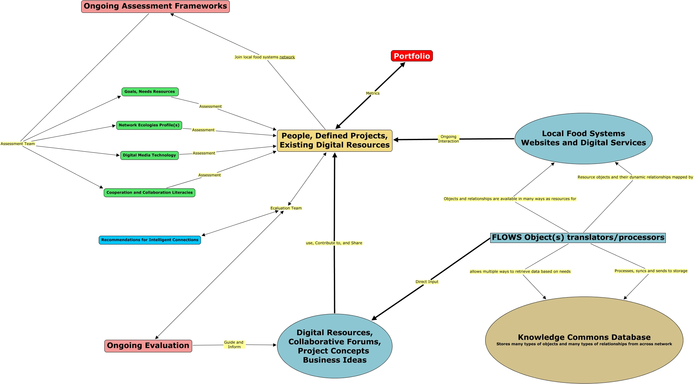

WARNING:
JavaScript is turned OFF. None of the links on this concept map will
work until it is reactivated.
If you need help turning JavaScript On, click here.
This Concept Map, created with IHMC CmapTools, has information related to: Knowledge, Collaboration, Effectiveness, Ongoing Assessment Frameworks Assessment Team Network Ecologies Profile(s), People, Defined Projects, Existing Digital Resources Ecaluation Team Ongoing Evaluation, Ongoing Assessment Frameworks Assessment Team Digital Media Technology, Network Ecologies Profile(s) Assessment People, Defined Projects, Existing Digital Resources, Local Food Systems Websites and Digital Services Ongoing Interaction People, Defined Projects, Existing Digital Resources, FLOWS Object(s) translators/processors Direct Input Digital Resources, Collaborative Forums, Project Concepts Business Ideas, People, Defined Projects, Existing Digital Resources Join local food systems network Ongoing Assessment Frameworks, Digital Resources, Collaborative Forums, Project Concepts Business Ideas use, Contribute to, and Share People, Defined Projects, Existing Digital Resources, Ongoing Evaluation Guide and Inform Digital Resources, Collaborative Forums, Project Concepts Business Ideas, People, Defined Projects, Existing Digital Resources Ecaluation Team Recommendations for Intelligent Connections, Goals, Needs Resources Assessment People, Defined Projects, Existing Digital Resources, FLOWS Object(s) translators/processors allows multiple ways to retrieve data based on needs Knowledge Commons Database Stores many types of objects and many types of relationships from across network, Digital Media Technology Assessment People, Defined Projects, Existing Digital Resources, Ongoing Assessment Frameworks Assessment Team Cooperation and Collaboration Literacies, FLOWS Object(s) translators/processors Processes, syncs and sends to storage Knowledge Commons Database Stores many types of objects and many types of relationships from across network, FLOWS Object(s) translators/processors Objects and relationships are available in many ways as resources for Local Food Systems Websites and Digital Services, Cooperation and Collaboration Literacies Assessment People, Defined Projects, Existing Digital Resources, Ongoing Assessment Frameworks Assessment Team Goals, Needs Resources
